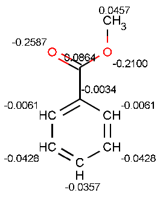
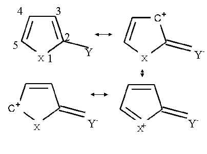

In this case we can speak about partial charge of atoms. We will give the definition of partial charge intuitively rather than exactly. A simple definition of partial charge starts from a basic two-atom model in which atoms A and B have different electron structures. In the figure to the left, the "boundary" of the valence shell is denoted with blue and green solid lines. This boundary is chosen to create a fixed control volume with a definite probability (near to 100%) of finding all electrons belonging to the atom on the inside.
In the intermediate state the nuclear distance of A and B decreases. As they draw closer to each other, each of their electron clouds is polarized to a different degree. Although the electrons of both A and B have partially moved outside of the control volume, this effect is greater in atom B being the more polarizable atom. The more polarizable an atom, the more electrons will flow out of its control volume so that the atom will become more positive relative to its initial state.
In the final state the two atoms reach the equilibrium nuclear distance and the two electron clouds overlap. Using the control volumes and electron clouds in the figure, atom B becomes more positively charged and atom A becomes more negatively charged relative to their initial states. In this way, partial charge of an atom in the molecule is measured as a charge flow out of or into the atom's control volume.
In benzene every carbon atom has the same electronegativity. This is why the partial charge distribution is identical among the carbon atoms. The total partial charge of the hydrogen atoms has the same magnitude with opposite sign. The π partial charge is zero for all atoms of benzene. In our model, the total charge is composed of two independent components - the pi and sigma partial charges, which are determined by the pi and sigma bonds, respectively.
Total charge and π charge distribution of benzene:In ring substituted benzene, the partial charge distribution helps to predict the reactivity of the carbon atoms that are members of the ring. If the substitute is electron-donating, the partial charge increases in the ortho and para positions of the aromatic ring. If the substitute is electron-withdrawing, partial charge decreases in the ortho and para positions.
In the figure to the left, the total partial charge reaches a maximum at the meta position relative to the other aromatic atoms due to the electron-withdrawing effect of the methoxycarbonyl group.
Since the amine group is electron releasing, the total partial charge reaches a maximum (relative to the other aromatic positions) at the ortho and para positions.
The effects of substitution in five membered aromatic rings can also be described with resonance structures:
All of these resonance structures contribute to the resulting partial charge distribution. Here X represents any heteroatom and Y is any electron-withdrawing substitutent. Resonance structures reveal that positive partial charge will be increased at the positions 1, 3 and 5.
Let Y stand for a methoxycarbonyl group and let X represent nitrogen. The calculated partial charge distributions of methyl 1H-pyrrole-2-carboxylate and pyrrole are given below. The size of each red spot represents the accumulated excess positive charge. From resonance structures we would expect positive partial charge to increase at positions 1, 3 and 5. This expected distribution agrees with the calculated ones.
Hydrocarbons usually have weak acidic character. Carbon atoms have different partial charges and ability to delocalize excess negative charge after the loss of a proton. The more positive partial charge accumulated on the carbon atom, the more acidic its character.
From partial charge calculations, we find that all the carbon atoms have negative partial charge except for the one indicated by a red arrow. The most acidic carbon atom at the tip of red arrow has partial charge of +0.0285 electron unit. This result agrees with the published result, see Ref.5.